AIR BAG SYSTEM
- Path
- Descriptions > 55 ELECTRICAL EQUIPMENT > 5580 SPECIAL ACCESSORIES > AIR BAG SYSTEM
- Kind
- system description
- Applies to
- all engines; all production periods
- Interactive page
- https://sloeber94.github.io/elrnDB-lThss/en/#/204207
Applies to: all engines; all production periods
VIEW OF ASSEMBLY
The following figure shows the complete Air Bag system configuration
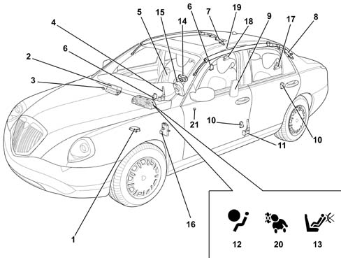
- 1 - Electronic control unit.
- 2 - Passenger side airbag module
- 3 - Passenger side front air bag key-operated disablement switch
- 4 - Passenger side pretensioner
- 5 - Passenger sidebag module
- 6 - two right side satellite impact sensors
- 7 - Passenger window bag module
- 8 - Driver's window bag module
- 9 - Driver's sidebag module
- 10 - Two left side satellite impact sensors
- 11 - Driver's side pretensioner
- 12 - Air Bag system fault indication warning light
- 13 - Passenger side front airbag deactivation warning light
- 14 - Driver's airbag module
- 15 - Clock spring
- 16 - Tester input
- 17 - Left rear pretensioner
- 18 - Right rear pretensioner
- 19 - Rear sidebag deactivation switch
- 20 - Rear sidebag deactivation warning light
- 21 - Passenger presence sensor
INTRODUCTION
The airbag system fitted to the car is activated following moderate to severe front or side impact to protect the occupants. The sidebags and window bags protect the chest and head respectively. In the case of the rear passengers, this protection is guaranteed only to side seat occupants.
The system is complemented by front and side rear seat belt pretensioners. These are fitted with load limiters to optimise the restraining action.
It is NECESSARY for seat occupants to wear their seat belts correctly to ensure the air bags work to maximum effectiveness.
A control system controlled by an electronic control unit controls partial or total device activation in the case of front or side impact.
The electrical connection between air bag components is via wiring. This is built into the facia wiring harness in the case of front devices and into the rear wiring harness in the case of side devices.
The control unit is connected to the system via two connectors, one for the front lead and the other for the rear lead.
The front airbag module on the passenger side may be deactivated voluntarily by means of a special key-operated switch on the side of the facia. Front passenger side airbag module deactivation does not disable the sidebag modules. This means that any children carried in the car are protected against side impact.
Rear sidebag modules may be deactivated voluntarily by means of a special switch in the right hand side of the boot near the power point.
The following indications show the system is working properly:
- fault warning light (red) on the control panel:
- passenger side airbag disabled warning light (yellow) on the instrument panel;
- rear side bag disabled warning light (yellow) on the instrument panel;
- tester input, K line built into the EOBD intake, to check operation using an EXAMINER.
COMPOSITION
The airbag protection system comprises:
- An electronic control unit;
- four side impact sensors (two on the right and two on the left) located in the side and rear pillars;
- a passenger airbag disablement switch;
- a rear sidebag disablement switch;
- two frontal protection airbag modules for front seat occupants;
- a person presence sensor on the front passenger seat;
- four side protection sidebags (chest, abdomen) for front and rear side seat occupants;
- four side protection head bag modules (head) for front and rear side seat occupants;
- four seat belts with pretensioners on the front and rear side seats;
- seat belts and accessories.
Electronic control unit
The electronic control unit is positioned beneath the central tunnel.
Specifications
The electronic control unit manages the entire system and controls all its components. It is designed to recognise an impact situation in plenty of time to activate the pretensioners alone or the pretensioners plus the air bag modules according to impact severity and type.
The control unit is rigidly secured to the body beneath the central car consule near the centre of gravity. This location allows interior deceleration sensors to detect car deceleration with accuracy.
Composition
The following diagram shows the control unit.
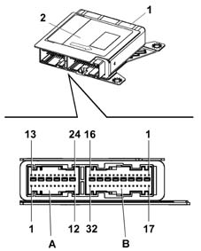
- 1 - Electronic control unit
- 2 - Identification plate
- A - 24-way connection for rear cable
- A - 32-way connection for front cable
The control unit contains two deceleration sensors, one electronic and one electromechanical safety sensor that activates an activation enablement function independently of the electronic sensor.
If the car deceleration level detected by the electronic sensor and processed by the ECU in terms of impact severity, exceeds the severity level set for the device deactivation control, the control unit allows the command to be sent only if the safety sensor is closed at the same moment.
The following functions are present to ensure the system is correctly managed:
- energy accumulation: the control unit is supplied at 12V with the key ON but can still operate for a few fractions of a second if the power supply is cut off or experiences a voltage drop in order to safeguard system operation and write the data in the crash memory.
- check earth fastening: the control unit software checks the electrical contact between body and control unit;
- fault memory: with the key ON, the control unit continuously monitors circuit operation (including energy reserve circuits) during normal vehicle operation and impacts. It also diagnoses all electrical parts of the system and indicates the presence of faults by turning on an airbag system fault warning light on the instrument panel and saving the fault code.
- crash memory: records information on crash events that trigger activation of the pretensioners and front or side modules.
Because it is so important, the control unit is designed so that it cannot be opened without leaving visible signs of tampering.
Operation
In case of frontal impact, the electronic sensor detects a deceleration signal along the car's longitudinal centre line. If the signal processed by the processor inside the control unit indicates an impact severe enough to require system intervention and if, at the same time, the safety sensor is closed (activation enabled), the control unit controls activation of the pretensioners along as an initial intervention level. In the case of more severe impact, it controls activation of the pretensioners and front airbags (activation of the driver module alone if the passenger side module is deactivated or without a passenger present).
The front airbags feature double-stage activation, i.e. a reduced explosive charge is set off with low impact energy while complete activation takes place if the protection requirement is maximal.
Similarly, when side impact occurs, the control unit is able to recognise direction and intensity and thus activate the three airbags present on the side affected by impact. Four sensors, two on each side, are present along the entire length of the passenger compartment to provide full coverage against side imact. These are located in the front and rear pillars.
These sensors are designed to detect side impact at a very early stage, process the signal and send a pulse to the control unit that further processes the signal and decides whether to set off the airbags or not.
System activation times are in the order of thousandths of seconds and are so fast that occupant body movements can be anticipated following impact.
After each activation of one of the controlled systems (pretensioners, front airbags, sidebags), the control unit stores the activation in its permanent memory and controls activation of the fault warning light on the instrument panel.
Before it is replaced, the control unit guarantees activation of individual devices within the following limits:
- 3 impacts with activation of front seat belt pretensioners alone;
- 3 impacts in total with side bag activation (right or left);
- 1 impact with activation of pretensioners and front airbags (even if only one stage is activated);
- any combination of the above situations until one of the limits indicated is reached.
If one of the limits described is not reached, it will be possible to reuse the control unit after carrying out the RESET procedure using the EXAMINER once system operating conditions have been restored. The last activation for each of the sequences will prevent further reset procedures.
System self-diagnosis
The control unit carries out continuous self-diagnosis of system operation. More specifically:
- it detects and stores faults;
- it recognises the various components and the fault type;
- it indicates the source of these fault by turning on an instrument panel warning light.
Faults stored in the control unit may be deleted only after the fault has been repaired by means of the EXAMINER device.
Air Bag system fault warning light
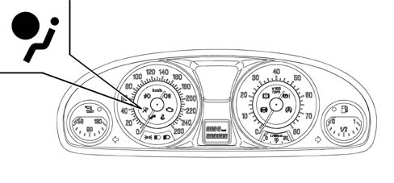
Specifications
At key ON, the fault warning light (red) comes on for about four seconds (initial self-diagnosis stage) and then goes off. If the control unit detects a fault in the warning light, it saves the corresponding fault code. If no system faults are detected at key on and no fault conditions are present in the fault memory, the warning light goes off after four seconds of self-diagnosis. Otherwise it stays on until key off.
Operation
The warning light stays or comes on durng normal car operation in the following cases:
- the control unit detects a fault in the airbag system;
- the control unit detects a crash with system activation;
- when a fault is detected in the warning light connection circuit.
As a consequence of a crash when the pretensioners or sidebags alone are activated, the warning light stays on until system operating conditions are restoered (replacement of affected part or control unit repair using an EXAMINER).
If the crash causes the front airbag modules to activate, the warning light stays on permanently because the control unit cannot reset (in this case the control unit must be replaced).
If internal operating errors occur during the operational lifetime of the control unit that cannot be repaired during the EXAMINER, this are indicated by permanent activation of the warning light.
Front passenger Air Bag disabled warning light
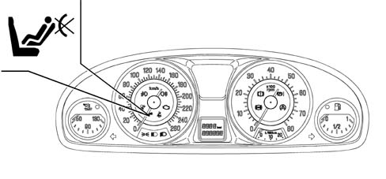
Specifications
With the key ON, the yellow passenger side air bag disabled warning light comes on for about four seconds (initial self-diagnosis stage). If the control unit detects a fault in the warning light, it saves the fault code, turns on the fault warning light and maintains the passenger side airbag module disabled. System operation is restored by means of an EXAMINER as with the fault warning light.
Once the initial self-diagnostic stage of 4 seconds has elapsed, if the key-operated disablement switch is turned OFF, the warning light stays on to indicate (passenger module disabled). If no faults are present, the warning light flashes for another four seconds and then goes off to indicate (passenger module enabled).
Driver's Air Bag module
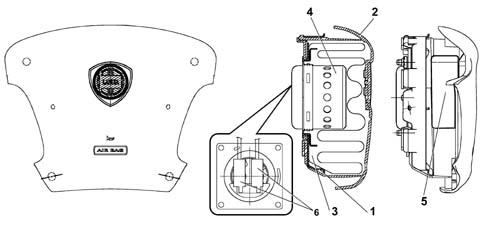
- 1 - Retaining bracket
- 2 - Cover
- 3 - Folded cushion
- 4 - Gas generator
- 5 - Warning plate
- 6 - Connection points to electrical equipment
Specifications
The driver side air bag is a passive safety device. It takes the form of a bag that inflates automatically in the case of frontal impact to interpose itself between the driver's body and front passenger compartment structures. The airbag module is installed in the middle of the steering wheel. The module cover also acts as a horn control.
Composition
The module comprises:
- a plastic cover that tears at preset points when activated to allow the bag to expand correctly.
- a 55 litre bag, rmade out of nylon yarn (PA 6.6) woven to minimse skin abrasions in the case of contact and folded in such a way as to ensure that inflation is gradual and not directed toward the driver;
- a hybrid gas generator;
- a containment case.
A warning plate on the base of the gas generator shows handling instructions(See assembly ) 5580C AIR BAG SYSTEM
Operation
Bag inflation is determined by a gas generator that offers two intervention stages that can be activated separately according to impact severity.
The delay (thousandths of seconds) between activation stages 1 and 2 allows bag inflation energy to be adjusted. This delay is managed by the control unit. According to crash intensity, the ECU determines activation of the first stage and the delay with which the second stage is activated to allow bag inflation energy to be optimised. Bag inflation is immediate because the fabris is permeable.
Clock spring
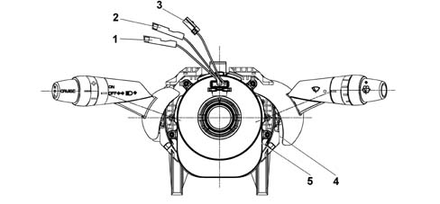
- 1 - Electrical connectoin for connecting air bag first stage (green)
- 2 - Electrical connection for connecting air bag second stage (yellow)
- 3 - Steering wheel electical function lead
- 4 - Lighting stalk unit
- 5 - Clock spring
Specifications
The clock spring is a device that allows the leads connecting the air bag module and the other electrical controls installed on the steering wheel to follow steering wheel rotation.
The device consists of two plates and is built into the stalk unit via its lower plate. It is secured in place by means of fasteners on the upper plate. Connection to the electrical system on the steering wheel takes place via connection points on the edge of the lower plate.
Composition
The clock spring is fitted with three leads on the steering wheel side. Two of these are used to connect the air bag module (first and second stage) and one to connect the steering wheel electrical functions (horn, radio controls).
A ring on the lower plate, steering wheel side, automatically prevents both plate from turning in relation to one another hwen the device is disconnected from the steering wheel.
The device is supplied complete with stalk switch.
Operation
Inside the two plates, the leads connecting the air bag module and the various electrical functions are wound into a spiral with sufficient coils to follow the steering wheel rotations. The upper plate is turned by fasteners on the inside of the retaining ring that fit into the seat on the steering wheel hub. In working position, the steering wheel presses on the ring to release it from its fasteners and thus allow both plates to turn freely. When the steering wheel is removed, the spring-loaded ring locks rotation between both plates. This function prevents the upper plate, now no longer secured to the steering wheel, from turning freely and unwinding or winding the coil inside the device and possibly causing it to break.
The following must be observed during operations that require removal of the steering wheel and device.
- always work with the car's wheels aligned straight ahead.
- secure both plates with a band for safety before removing the stalk unit.
Passenger Air Bag module
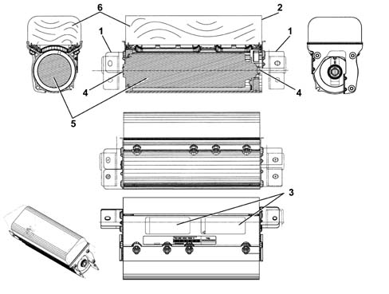
- 1 - Retaining bracket
- 2 - Cover
- 3 - Warning plate
- 4 - Connection points
- 5 - Gas generator
- 6 - Folded cushion
Specifications
The passenger side air bag module is located inside the facia under a flap in the trim above the glove compartment. It is secured to the beam by brackets. As with the driver side module, it cuts in to offer frontal passenger protection in the case of impacts that exceed a given threshold. It can also be deactivated voluntarily.
Composition
The module comprises:
- a metal mount containing the hybrid gas generator and bag;
- a paper cover that tears at preset points when activated to allow the bag to expand correctly;
- a 105 litre bag, rmade out of nylon yarn (PA 6.6) woven to minimse skin abrasions in the case of contact and folded in a particular way;
- a gas generator consisting of a hybrid pressurised gas container that houses a pyrotechnic charge;
- a connection point to the electrical system;
A warning plate on the bag cover shows handling instructions(See assembly ) 5580C AIR BAG SYSTEM
Operation
Bag inflation is determined by a gas generator that offers two intervention stages that can be activated separately according to impact severity.
The delay (thousandths of seconds) between activation stages 1 and 2 allows bag inflation energy to be adjusted. This delay is managed by the control unit. According to crash intensity, the ECU determines activation of the first stage and the delay with which the second stage is activated to allow bag inflation energy to be optimised.
The increase in bag volume tears the flap in the facia at preset points. Once inflation is complete, the bag is in optimum position to carry out its occupant protection function.
The bag deflates immediately after being inflated by the gas because the fabric is permeable.
Passenger Air Bag disabling
Two procedures are available for cutting out activation of the passenger air bag by the control unit:
- manual (key-operated);
- automatic (by means of a special sensor on the seat).
Manual intervention cuts out passenger air bag operation voluntarily and temporarily.
Automatic intervention prevents the passenger air bag operating if the passenger seat is empty. This reduces car repair costs as a result of unnecessary module activation.
Passenger air bag disablement key-operated switch
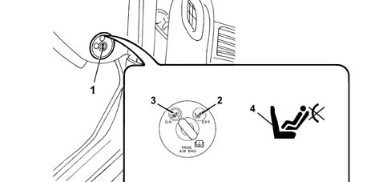
- 1 - key-operated switch
- 2 - OFF position: Passenger air bag disabled
- 3 - ON position: Passenger air bag enabled
- 4 - Passenger side disablement warning light
Specifications
An ignition key-operated switch allows enablement (ON) and disablement (OFF) of the air bag module on the passenger side. The switch is positioned at the end of the facia on the passenger side so that it is accessible only with the door open.
In this case, the control unit cuts out passenger air bag activation but enables normal operation of the pretensioner (only with seat belt fastened). This happens because if a passenger is present but the switch has been left OFF by accident, the air bag will not activate - only the pretensioner.
With the key in OFF position, the control unit also activates the passenger side air bag disablement warning light on the instrument panel.
Composition
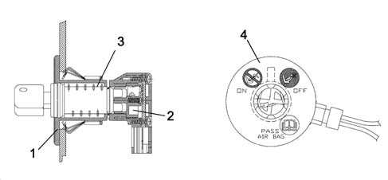
- 1 - Casing
- 2 - Switch
- 3 - Key barrel
- 4 - Plate
The unit consists of a case that houses the switch, a key barrel inserted in the case and held in place by a clip and a plate that indicates the positioned assumed by the switch (ON or OFF). A socket for the electrical system connector is also present on the case.
Switch faults are indicated by activation of the air bag system fault warning light.
Operation
The switch is operated by means of the car ignition key whenever the driver wishes to enable or disable activation of the passenger side front module.
During the normal key on diagnostic procedure (4 seconds), the electronic control unit checks switch status. If the status identified is OFF, the module is excluded from possible activation, the corresponding signal is saved and the passenger air bag disabled warning light on the control panel is turned on. If the status identified at the end of the four second diagnostic procedure is ON, the warning light flashes for a further four seconds and then goes off.
The remaining side bag modules are not affected by deactivation commands.
In the case of switch anomalies or faults, the system reacts as follows:
- passenger side module is not activated
- air bag system fault warning light comes on
- passenger side disablement warning light comes on
- deactivation status is saved.
Passenger Air Bag automatic disabling sensor
Composition
A sensor for detecting passenger presence is fitted in the passenger seat between the padding and trim. The sensor consists of numerous cells distributed over the contact surface of the seat.
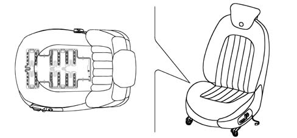
- 1 - Seat
- 2 - Presence sensor
Operation
The control unit reads sensor resistance to determine whether a passenger is present or absent. When a condition of "passenger absent" is detected, the control unit cuts out activation of the passenger side air bag and associated pretensioner.
If the sensor subsequently detects "passenger present" status, the control unti immediately reactivates the passenger air bag and associated pretensioner (belt fastened).
If "passenger absent" status switches to "passenger present" status with the key ON, the control unit causes the passenger air bag disablement warning light on the instrument panel to flash for 4 seconds.
This does not happen in the opposite case (switching from "presence" to "absence").
Rear seat side bag disablement key-operated switch
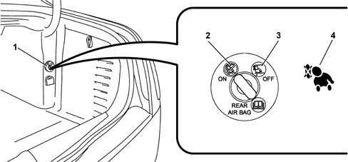
- 1 - key-operated switch
- 2 - OFF position (rear seat side bags disabled)
- 3 - ON position (rear seat side bags enabled)
- 4 - Rear seat side bag warning light (instrument panel)
Specifications
An ignition key-operated switch allows enablement (ON) and disablement (OFF) of the sidebag modules in the rear seats. The switch is located in the right hand side of the boot near the power point.
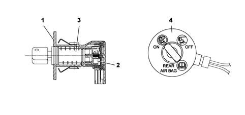
- 1 - Casing
- 2 - Switch
- 3 - Key barrel
- 4 - Plate
The unit consists of a case that houses the switch, a key barrel inserted in the case and held in place by a clip and a plate that indicates the positioned assumed by the switch (ON or OFF). A socket for the electrical system connector is also present on the case.
Switch faults are indicated by activation of the air bag system fault warning light.
Operation
The switch is operated by means of the car ignition key whenever the driver wishes to enable or disable activation of the rear saet side bag modules.
During the normal key on diagnostic procedure (4 seconds), the electronic control unit checks switch status. If the status identified is OFF, the module is excluded from possible activation, the corresponding signal is saved and the passenger air bag disabled warning light on the control panel is turned on. If the status identified at the end of the four second diagnostic procedure is ON, the warning light flashes for a further four seconds and then goes off.
The remaining side bag modules are not affected by deactivation commands.
In the case of switch anomalies or faults, the system reacts as follows:
- the rear seat modules are not activated
- air bag system fault warning light comes on
- the rear side bag module disabled warning light comes on
- deactivation status is saved.
Side Bag module
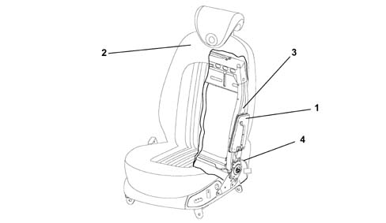
- 1 - Side bag module
- 2 - Seat trim
- 3 - Seat structure
- 4 - Power lead
Specifications
To ensure maximum front seat occupant safety in the case of side impact, side bag modules are installed on the seat squabs. They are fitted on the side facing the outside of the car beneath the trim.
This configuration is considered one of the most effective because it ensures the airbag is always in optimum position in relation to the occupant regardless of seat setting or occupant size.
The side bag mainly protects the chest and abdomen, even if the seat occupant is not sitting properly because bag opening dynamics minimise the risk of body damage caused by impact with the airbag.
Composition
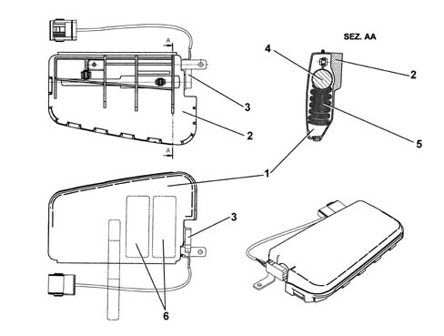
- 1 - Outer cover
- 2 - Container
- 3 - Electrical connection point
- 4 - Gas generator
- 5 - Folded cushion
- 6 - Warning plate
The side bag module consists of a plastic container that houses the gas generator and a permeable nylon bag (PA 6.6) with a volume of 12 litres.
The module container includes a cover with preset break points. When the seat cover is fitted, the exterior of the trim in the area over the bags includes seams designed to yield easily.
A warning plate on the container base shows handling instructions(See assembly ) 5580C AIR BAG SYSTEM
The module is connected to the electrical system by means of two leads with yellow sheaths. These are contained, together with the seat earth connection lead, in a protective fabric-lined duct secured to the seat structure. Both leads end in a yellow connector. The module, seat belt fastened sensor (driver side only) and heat pad (if fitted) connectors are anchored to a removable mount on the seat base.
Operation
The module gas inflation generator is electrically activated by means of a signal from the electronic control module. Following this signal, a pyrotechnic activation is set off that causes the gas in the generator to expand. The expanding gases emerge through special openings and bring about bag inflation. The increase in bag volume breaks the container in the set areas and causes the squab cover seams to yield along the preset sections to allow the bag to emerge correctly. When fully inflated, the bag is in an optimal position to protect the occupant. The bag deflates immediately after being inflated by the gas because the fabric is permeable.
Window Bag module
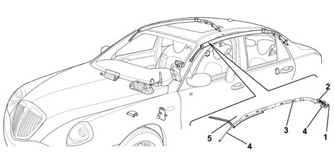
- 1 - Connector
- 2 - Gas generator
- 3 - Bag container
- 4 - Anchorage points
- 5 - Ceiling lining
Specifications
All versions of the car come with a system for protecting the heads of front and rear side occupants.
Apart from the structural features of the car, the side bags are the only passive protection device in the case of side impact. The head protection air bags (i.e. window bags) work in conjunction with the front air bags to offer front seat occupants the best possible protection in the case of impact. They also eliminate the risk of injury to arms and shoulders and protect the heads of rear side occupants.
Of all the different types of window bag, the drop-down type offers the best performance due to the extensive area covered and its ability to support itself even in the absence of a backing if the side windows break.
Composition
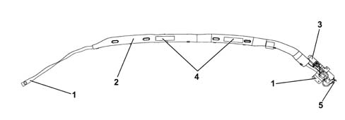
- 1 - Retaining mounts
- 2 - Bag containment sleeve
- 3 - Gas generator
- 4 - Warning plate
- 5 - Connector
The window bag module consists of:
- a gas generator secured by mounts to the rear car pillar;
- a flexible pipe in permeable cloth secured by a band to the gas generator that diffuses the gas evenly over the entire length of the bag;
- a bag of about 21 litres in volume secured to the gas generator together with a flexible pipe. It is made out of nylon (PA 6.6) and folded inside a containment sleeve. When inflated, the bag is designed to ensure impact energy is correctly absorbed while maintaining the occupant's head at an appropriate disatnce from the impact area. Once inflation is completed, gas is expelled immediately through the porous fabric.
- easy-opening plastic clips that secure the bag to the ceiling rail;
- a retaining belt that holds the bag in position once inflated;
- a connector for connection to the electrical system;
- a warning plate with instructions
Operation
The module gas inflation generator is electrically activated by means of a signal from the electronic control module. Following this signal, a pyrotechnic activation is set off that causes the gas in the generator to expand. The expanding gas emerges through special openings and is distributed evenly along the length of the bag through the hose to make the bag inflate. the increase in bag volume causes the fastening container to break, the sleeve seams to yield and the trim to open. Everything is arranged so that the bag emerges correctly downward. The bag is made to inflate correctly by a retaining belt on the front end of the bag. When fully inflated, the bag is in an optimal position to protect the occupant. The bag deflates immediately after being inflated by the gas because the fabric is permeable.
Satellite side impact sensors
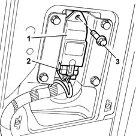
- 1 - Satellite side impact sensors
- 2 - Link connection
- 3 - Retaining bolt
Specifications
The side protection system consists of the airbags and also an electronic control circuit that ensures the system operates correctly. Four satellite sensors containing an accelerometer are installed inside the side and rear pillars to measure accelerations resulting from side impact.
Composition
The satellite side impact sensor consists of a case containing the acceleration sensor. A pin on the rear part of the case is used to position the sensor correctly in its seat. The case also contains a connection point for connectoin to the electrical system.
Operation
If the acceleration level detected by the relevant sensor causes a given threshold to be exceeded, the information is compared with a measurement obtained by a safety sensor in the air bag system electronic control unit. If the measured values are consistent, the control unit controls activation of the side bags on the side affected by impact.
Seat belt pretensioners
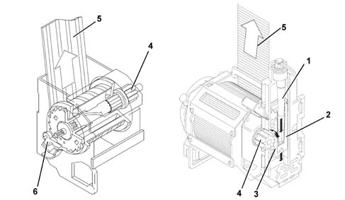
- 1 - Gas generator
- 2 - Piston
- 3 - Rack
- 4 - Reel coil
- 5 - Seat belt
- 6 - Torsion bar
Specifications
The pretensioners are pyrotechnic devices that are activated electrically by means of a signal from the electronic control unit. They are built into the reel of the front and rear side seat belts.
When the pretensioners cut in following frontal impact above a certain threshold, the seat belt straps are retracted to hold the occupant as closely as possible against the seat squab.
Operation
When the car decelerates to a sufficient extent, the electronic sensor in the electronic control unit sends a signal to trigger the gas generator pyrotechnic charges (5). Combustion of propellent (6) develops a chemical reaction that produces inert gas. Gas pressure then generates a force that pushes the piston rack upward (4). The rack turns a toothed wheel (1) connected to toothed wheel (2). This meshes with toothed bush (3) to change the rotary motion of the chuck so that it turns in the opposite direction to the direction which the belt unwinds and rewinds the belt by a few centimetres.
Operating strategy
The following table shows system status with reference to front air bag deactivation devices
DEVICE STATUS | PYROTECHNIC CHARGE STATUS | |||||
|---|---|---|---|---|---|---|
Passenger bag switch | PPD Passenger presence sensor | Belt fastened | Passenger airbag | Passenger side bag | Head Bag | Pretensioner |
ON | ON | YES | ACTIVE | ACTIVE | ACTIVE | ACTIVE |
ON | ON | NO | ACTIVE | ACTIVE | ACTIVE | DEACTIVATED |
ON | OFF | NO | DEACTIVATED | DEACTIVATED | ACTIVE | DEACTIVATED |
OFF | ON | YES | DEACTIVATED | ACTIVE | ACTIVE | ACTIVE |
OFF | ON | NO | DEACTIVATED | ACTIVE | ACTIVE | DEACTIVATED |
OFF | OFF | NO | DEACTIVATED | DEACTIVATED | ACTIVE | DEACTIVATED |
The following table shows system status with reference to rear side bag deactivation devices
DEVICE STATUS | PYROTECHNIC CHARGE STATUS | |||
|---|---|---|---|---|
Side bag deactivation device | Belt fastened | Side Bag | Side head bag | LH and RH pretensioner |
ON | YES | ACTIVE | ACTIVE | ACTIVE |
OFF | NO | DEACTIVATED | ACTIVE | ACTIVE |
OFF | YES | DEACTIVATED | ACTIVE | ACTIVE |
ON | NO | ACTIVE | ACTIVE | ACTIVE |